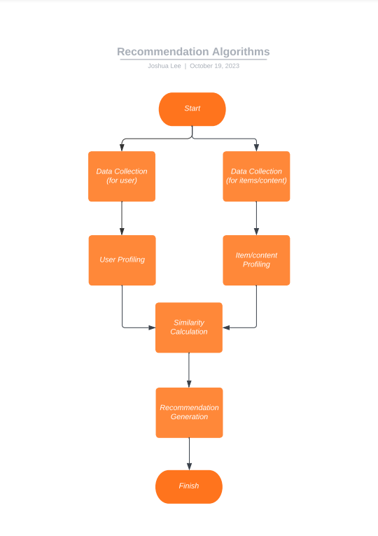
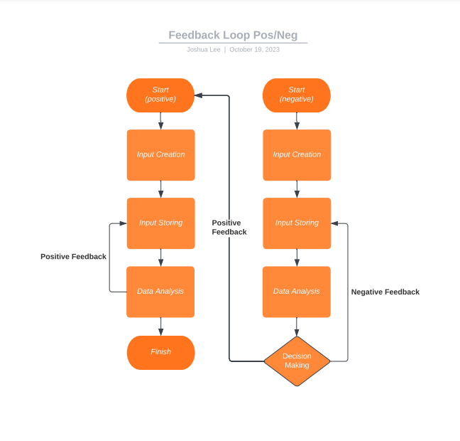

Algorithm Awareness & The Spread of Conspiracy Theories
Joshua Lee
Allen ISD STEAM Center
Advanced Computer Science III
David Ben-Yaakov
October 18, 2023
The Basics of Recommendation Algorithms
Recommendation algorithms are the heart of personalized experiences in the digital world. These algorithms are designed to recommend content or items that align with a user’s preferences and interests to keep users engaged in the content and/or items the algorithm is recommending. Most basic recommendation algorithms are able to produce recommendations through a five-step process that follow these steps:
1. Data Collection: This first step involves gathering user data. Examples of this would be what the user purchases, clicks, and likes. This data is crucial for the algorithm’s understanding of the user’s interests and preferences.
2. User Profiling: The second step involves the creation of a user profile based on the data previously collected. These profiles include information about a user’s most engaged content and items, previous interactions, etc.
3. Item/content Analysis: The third step essentially involves the analysis of items/content to allow the algorithm to understand what is available for recommendation. The algorithm analyzes data extracted from each item/content, such as tags, attributes, and keywords, to help categorize items/content.
4. Similarity Calculation: The fourth step involves the algorithm calculating the similarity between users and items/content. These calculations vary depending on the type of recommendation. For user-based recommendations, the algorithm compares the similarity of a user to another based on their profiles. For item-based recommendations, the algorithm compares the similarity between items/content based on their profiles.
5. Recommendation Generation: The fifth step involves the algorithm generating the recommendation. After similarities are calculated, items/content are ranked based on their similarity levels to the user. The higher ranking items/content will be generated and recommended first.
These steps describe the basis of most recommendation algorithms but there are far more complex algorithms that involve further steps to produce more accurate results. One of these steps is a feedback loop.

The Feedback Loop
The feedback loop is a process where the algorithm learns from user behavior in order to adapt its recommendation to provide recommendations that better align with the user’s interests and preferences. This process functions with a minimum of four steps.
1. Input Creation: This first involves the user to interact with an item/content giving the algorithm data.
2. Input Storing: The algorithm then stores the data inputted by the user in order to learn the user’s interests and preferences.
3. Data analysis: The algorithm determines if the data stored is a positive or negative feedback from the user. Positive feedback would be any indications that the user is interested in the item/content that was recommended and negative feedback would be the opposite.
4. Decision making: If the algorithm gains positive feedback, the algorithm would simply continue to recommend items/content similar to the items/content that is receiving positive feedback. However, if the algorithm gains negative feedback, the algorithm would store that in its system and attempt to find a better item/content to recommend.
This process may seem flawless and efficient in providing users a more personalized experience on the internet, but feedback loops run into a major issue often referred to as a filter bubble or echo chamber effect. Overtime, a feedback loop can create a self-reinforcing feedback loop that will limit the item/content the user is exposed to and create an extremely biased experience. This extreme bias can lead to more issues as they can be exploited to one’s benefit or even lead to conspiracy theories.

Conspiracy Theories & Algorithmic Amplification
Conspiracy theories are highly controversial ideas that are bound to be engaging for users. This highly engaging nature of conspiracy theories are often utilized in order to engage users for longer periods of time. This all revolves around the desire for money as longer engaged users will generate more ad revenue for platforms. Due to this profitable nature of conspiracy theories, recommendation algorithms can occasionally amplify conspiracy theories due to their highly engaging nature. Although this benefits the platforms with an increased ad revenue, this can be extremely dangerous as they can be misleading and spread fear. The algorithm's amplification of conspiracy theories can result in more people believing in them, which could lead to an interference in one’s daily life.
Platform Incentives
The root of the issue with conspiracy theories and algorithmic amplification are platform incentives. Every platform has the goal of maximizing user engagement to increase their income through ad revenue. This greed for money will oftentimes lead to a disregard for the quality and accuracy of the content the platforms will display. This priority on revenue will lead to the algorithms to promote many misleading or false information, such as conspiracy theories, over factual information. This issue can easily get out of control and platforms need to start checking the content they display. Without a credibility check society can fall victim to misguidance from misleading information such as conspiracies.
Potential for Exploitation
Without holding platforms accountable for their recommendation algorithms and the content/items they recommend, the issue with platform incentives opens an opportunity for exploitation. Malicious users that understand the issue with algorithms and how they work can produce content that can exploit the algorithms preference for highly engaging material. This can lead to serious issues with the spreading of conspiracy theories and even propaganda, which can prove to be a threat to society. Methods for exploitation that malicious creators can use are misleading thumbnails and provocative titles as they all aim to increase engagement to exploit the algorithm.
Conclusion
In conclusion, understanding how the recommendation systems work provides a better insight on the issues present in our society today with conspiracy theories and the algorithms’ potential for exploitation. In order to prevent this issue from becoming a serious threat to our society, people should be better informed on the recommendation algorithms to increase awareness. Awareness is the first step to preventing the threat that conspiracies pose on the internet.
References
Fitzgibbons, L. (2019, April 3). What is Feedback Loop?: Definition from TechTarget. IT Channel. Retrieved October 18, 2023, from
https://www.techtarget.com/searchitchannel/definition/feedback-loop
Khan, Ibrahim. (2020, September 11). Recommendation Systems for beginners. Medium. Retrieved October 18, 2023, from
https://medium.com/swlh/recommendation-systems-for-beginners-c53765547ef9
Tuters, M. (2023, July 31). How conspiracy theories spread online - it's not just down to algorithms. The Converstaion. Retrieved October 18, 2023, from
https://theconversation.com/how-conspiracy-theories-spread-online-its-not-just-down-to-algorithms-133891